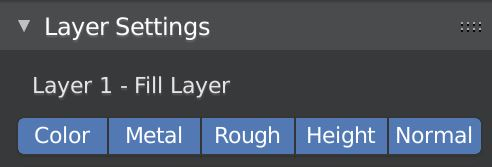

Layer Basics
A layer is a representation of a particular order of nodes in your material. This means that Layer Painter will generate nodes while you only work with the Layer UI. Because Layer Painter needs to find the layers and nodes in your material, you shouldn't edit nodes by hand if you want to keep the layer view.
A layer has PBR channels, which are Base Color, Metalness, Roughness, Height and Normal.
Additionally, you can enable Emission and Alpha.
These channels can be influenced by constant values, textures or node groups depending on the layer type.
There are three different layer types, which all have different funcions and usecases:
Layer Settings

The settings of the selected layer can be found in the Layer Settings Panel.
The first few settings are the same for every type of layer, the rest is different:
- Name of the layer and the layer type
- Visibility toggles for each channel
First Layer
When you add the first layer, you'll be asked if you want to enable the optional emission and alpha channels. These can then be used in all future layers.